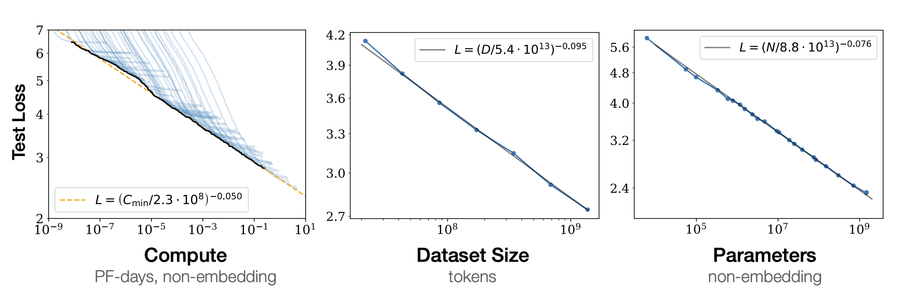
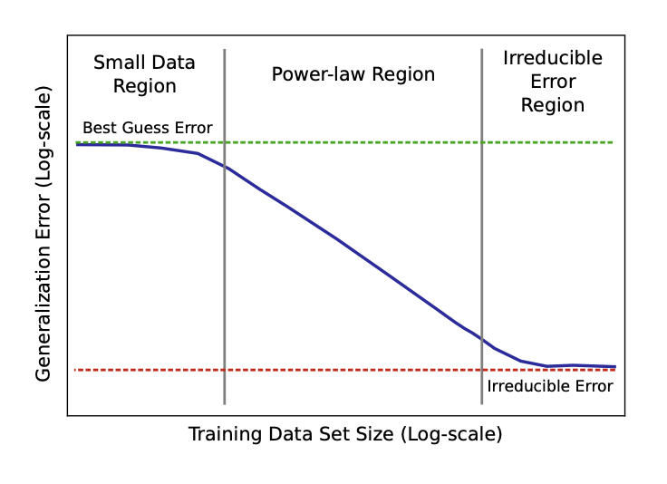
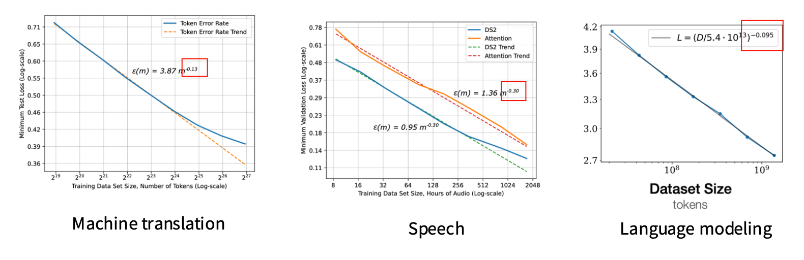
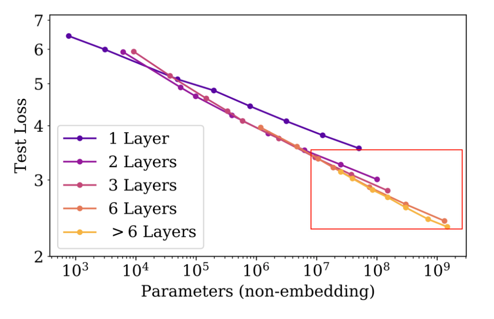

Lecture 09 & 11: Scaling Laws
当我们从头开始训练一个LLM的时候，我们要考虑很多因素：
- 要用什么样的模型
- 模型的参数数量要多少
- 训练数据要多少
- 手头上有多少计算资源
等等。
这些因素之间是相互关联的，我们需要找到一个平衡点，才能训练出一个性能优越的模型。但是，LLM的训练有一个难点就是：我们无法在训练之前就知道这些因素之间的关系，并且也没有办法用Grid Search或者Random Search来找到最优的组合，因为训练一个LLM需要消耗大量的计算资源和时间。因此我们就需要一些理论上的指导来帮助我们理解这些因素之间的关系，这就是Scaling Laws的作用，它告诉我们在不同的模型规模、数据规模和计算资源下，我们可以预测模型的性能会如何变化。Lecture 09将介绍Scaling Laws 的基本概念和原理，以及了解当Scaling不同的因素时，模型性能的变化趋势。Lecture 11将进一步探讨Scaling Laws在实际中的应用和重要性，以及什么是 \(\mu\)P Maximal Update Parameterization。
NOTE
这两节Lecture有些抽象，内容比较理论化，可能会有些难以理解，但是我觉得它们是非常重要的，因为它们可以帮助我们在训练LLM的时候，来选择合适的模型规模和数据规模，从而得到一个比较好的模型性能。虽然我们现在有很多预训练的模型可以直接使用，但是当我们真的需要从0开始训练一个LLM的时候，Scaling Laws是非常重要的，因为它可以帮助我们在有限的资源下做出更明智的决策，从而训练出一个性能更好的模型。
1 Why and What are Scaling Laws?
我们先来讨论一下，为什么需要Scaling Law，以及Scaling Law可以解决什么问题。 我们先来考虑一下这个问题：
我们有1000个H100的GPUs，我们的目的是在1个月之内，训练出一个表现不错的LLM模型，我们该怎么做？选择什么样的模型，模型的参数数量要多少，训练数据要多少，等等。
传统的方法是：
- 直接训练一个模型（假设是Transformer LLM）
- 大量的尝试不同的Learning Rate，Batch Size，model depth，model width等组合。
- 观察模型的性能，调整参数，继续训练
当模型规模比较小的时候，这种办法是可行的，但是当模型规模变大，训练时间变长的时候，这种办法就不太可行了，因为每次训练一个模型都需要消耗大量的计算资源和时间，我们无法在短时间内尝试不同的参数组合来找到最优的模型。因此我们需要一些理论上的指导来帮助我们理解这些因素之间的关系，这就是Scaling Laws。Scaling Laws 的核心价值就是：
用“小实验”预测“大结果”，先训练一堆小模型，从小模型学规律，然后外推到大模型。
NOTE: History of Scaling Law
其实Scaling Law并不是一个很新的概念，最早的Scaling Law可以追溯到20世纪60年代，当时的研究者就发现了在某些物理系统中，系统的行为会随着系统规模的增加而发生变化，这就是所谓的Scaling Law。后来，这个概念被引入到了计算机科学领域，尤其是在深度学习领域，研究者们发现，在训练深度神经网络的时候，模型的性能会随着模型规模、数据规模和计算资源的增加而发生变化，这就是我们现在所说的Scaling Laws。
2 Neural (LLM) Scaling Laws
接下来，我们来看一下Scaling Law如何在LLM中的应用，并且介绍不用类型的Scaling Laws：
- Data Scaling Law：预测Data Size和模型性能之间的关系
- Model Scaling Law：预测Model Size和模型性能之间的关系
Scaling Law在LLM中的应用，首先是由Kaplan等人在2020年提出的(Kaplan et al. 2020)，他们的实验结果，可以浓缩成下面的图：

2.1 Data Scaling Law
Data Scaling Law 就是一个简单的formula，来预测Data Size和模型性能之间的关系。(Hestness et al. 2017)做了实验，提出如下图所示的Data Scaling Law：

如Figure 2所示，Data Scaling Law可以分成3个部分：
{kind=link}
- Small Data Region: 当Data Size比较小的时候，模型的性能（Loss）不会有太大的提升，因为模型没有足够的数据来学习。
- Power Law Region：当Data Size增加到一定程度的时候，模型的性能（Loss）会有一个明显的提升，并且这种提升是按照Power Law的规律进行的。
- Irreducible Loss Region：当Data Size继续增加的时候，模型的性能（Loss）会逐渐趋于一个不可降低的水平，这个水平就是Irreducible Loss。
可以看到，在Power Law Region，模型的性能（Loss）和Data Size之间的关系是一个Power Law的关系，也就是说，模型的性能（Loss）会随着Data Size的增加而按照一个幂函数的规律进行下降。
直觉来说，我们知道，随着Data Size的增加，模型的性能（Loss）会不断下降，但是我们想知道，这个下降的规律是什么样的？是线性的，还是指数的，还是幂函数的？为什么是这种规律？接下来我们通过一个简单的Mean Estimation 的例子来解释一下Data Scaling Law的原理。
2.1.1 Mean Estimation Example
我们有\(N\)个input，\(x_1, \cdots, x_N \sim \mathcal{N}(\mu, \sigma^2)\)，我们想要估计它们的平均值\(\mu\)，我们可以使用一个简单的模型来进行估计：
\[ \hat{\mu} = \frac{1}{N} \sum_{i=1}^{N} x_i \tag{1}\]
通过这种Monte Carlo的方式，我们可以得到一个\(\hat{\mu}\)的估计值，那么这个估计值的误差（Loss）是什么样子的呢？我们可以通过计算来得到：
\[ \mathbb{E}[(\hat{\mu} - \mu)^2] = \frac{\sigma^2}{N} \tag{2}\]
可以看到，Mean Estimation的Loss和Data Size \(N\)之间的关系是一个Power Law的关系，也就是说，Loss会随着Data Size的增加而按照一个幂函数的规律进行下降, 当我们用对Equation 2取log值，我们可以得到：
\[ \log \mathbb{E}[(\hat{\mu} - \mu)^2] = \log \sigma^2 - \log N \tag{3}\]
可以看到，Mean Estimation的Loss和Data Size \(N\)之间的关系是一个线性的关系，也就是说，Loss会随着Data Size的增加而按照一个线性的规律进行下降。
这种类型的情况在别的模型中也会出现，比如

从图中可以看到，对于不同的数据类型，模型的性能和Data Size 之间的关系呈现一个Power Law的关系，但是，其对应的参数是（红色框）是不同的，这说明不同的数据类型会有不同的Scaling Law的参数，这也是我们在训练LLM的时候需要考虑的因素之一。接下来我们通过一个简单的例子来解释一下为什么不同的数据类型会有不同的Scaling Law的参数。 神经网络能拟合“几乎任意函数”，我们把它变成一个具体例子来算误差怎么随数据量变化。我们先来思考一下这个问题：
\(x_1, \cdots, x_N\) 是从一个Uniform Distribution中采样的，\(y_i = f(x_i) + \mathcal{N}(0, 1)\), 我们想要训练一个模型\(f_\theta\)来拟合这个函数，我们该怎么做？
最直接的方法是就是将这个 2D 的space切成不同的小块，每个小块的长度是 \(n^{-\frac{1}{4}}\), 通过这种方式，我们可以得到 \(\sqrt{N}\) boxes， 每个box里面有 \(\sqrt{N}\)个点，那这个误差是什么呢？
\[ Error \approx \frac{1}{\sqrt{N}} + (\text{other smothness terms}) \tag{4}\]
从这个式子可以看出来，在 \(d\)-dimensional space中，这个误差就变成了 \(Error = n^{\frac{-1}{d}}\)，当我们取 \(\log\) 之后，就可以得到线性关系，也就是说，随着数据维度的增加，误差的下降速度会变慢，这就是所谓的“Curse of Dimensionality”，这也是为什么不同的数据类型会有不同的Scaling Law的参数的原因之一。
上面这个简单的例子说明了，当intrinsic dimension很高时，我们看到scaling law的指数很小。
2.1.2 Data Composition
之前我们讨论的Data Scaling Law是基于一个假设的前提条件的，那就是我们的数据是从一个Distribution中采样的. 但是在实际中，我们的数据可能来自不同的Distribution，这时候我们就需要考虑Data Composition的问题了。Data Composition 就是指当我们有多个不同类型的数据的时候，我们该如何进行Scaling Law的分析呢？这个scaling law也叫做 distribution shift scaling law.

我们可以看到，不同的data composition，只影响了scaling law的offset，这有个好处就是，我们可以通过在小模型上做实现验来估计这个offset，然后通过这个offset来预测大模型的性能。我们还可以通过这种方法来训练一个简单的模型（比如linear model）来预测不同data composition下的模型性能，这样我们就可以在训练大模型之前，来选出一个比较好的data composition来进行训练。
下一个问题就是，随着模型训练的规模增大，unique的data变得越来越小，在这种情况下，如果我们重复data，还会有一样的scaling law吗？这个也就是data repetition scaling law.

在这种情况下，scaling law会有以下的形式：
\[ D' = U_D + U_DR^{*}_D(1 - e^{\frac{-R_D}{R^{*}_D}}) \tag{5}\]
我们是要重复数据，还是要增加unique的数据，但是质量比较低。

2.2 Model Scaling Law
接下来我们来看一下Model Scaling Law，现在模型的规模越来越大，模型的类型也会来越多，如果从头开始训练的话，我们该怎么选择模型的规模和类型呢？在这一小节，会从以下几个方面来讨论：
- Model Architecture
- Optimizer
- Aspect Ratio / Depth
- Batch Size
2.2.1 Model Architecture
首先来看一下Model Architecture，我们熟知的Sequence Model有，Transformer 和 LSTM等, 要如何选择？
通过上面这个图，不管我们叠多少层LSTM，模型的性能都无法达到Transformer的水平，这说明在LLM的训练中，Transformer是一个更好的选择。
2.2.2 Optimizer
接下来，如果我们选择了Transformer作为我们的模型架构，那么我们该选择什么样的Optimizer呢？

上面这张图说明了，Adam的性能总体上要比SGD好很多，尤其是在模型规模比较大的时候，这也是为什么在LLM的训练中，Adam是一个更好的选择。
2.2.3 Depth vs Width
Transformer的模型规模可以通过增加Depth或者Width来进行扩展，那么我们该选择增加Depth还是Width呢？

从图中可以看到：
- 在 1 layer和2 layer之间，模型的性能提升非常大
- 当模型的参数提升到了 \(10^7\) 之后（width 增加了），增加Depth的效果就不太明显了
有一个点需要注意的就是，在Transformer模型中，不是所有的参数都是equal的：

从图中可以看到，当我们将embedding的参数也纳入考虑的范围时，得到的结果就不太一样了。
接下来，我们来了解一下如果选择Aspect Ratio。下图展示了不同Aspect Ratio下模型的性能：

从中间的图中，我们可以看出，不管是什么样参数的模型，Aspect Ratio的与Loss的关系都是一样的，呈现一个U型的关系，而且在最低点都在一个range里面，这也就说明，只要在这个range里，我们就可以得到一个比较好的模型性能。
2.2.4 Batch Size
最后，我们来讨论一下Batch Size和Learning Rate的选择，在LLM的训练中，Batch Size和Learning Rate的选择也是非常重要的，因为它们会直接影响到模型的性能和训练的效率。不同的Batch Size 对应这不同的“最优” Learning Rate。

从上图可以看到，当Batch Size比较小的时候，模型的Loss会，这就是引出来了critical batch size的概念：
2.2.5 Learning Rate
Optimal Learning Rate 会根据模型的规模和Batch Size的不同而有所不同，通常来说，随着模型规模的增加，Optimal Learning Rate也会增加，但是当Batch Size增加到一定程度的时候，Optimal Learning Rate就会趋于一个稳定的水平，这也就是为什么在LLM的训练中，我们需要根据模型规模和Batch Size来选择合适的Learning Rate。概念提出 \(\mu\)P scaling aware initialization, 通过这种方法，我们可以在不同的模型规模和Batch Size下，来选择合适的Learning Rate，从而得到一个比较好的模型性能。
看到了这里，我们了解到，所有的scaling law都是基于 neg-log-perplexity的，也就是说，我们是通过观察模型的Loss来进行分析的，但是当down-stream有不同的指标时，模型就不能有很好的预测，
3 Joint Data-Model Scaling Law
了解了Data Scaling Law和Model Scaling Law之后，我们就可以将它们结合起来，来得到一个Joint Data-Model Scaling Law，这个Scaling Law可以帮助我们在训练LLM的时候，来选择合适的模型规模和数据规模，从而得到一个比较好的模型性能。基本的Joint Data Model Scaling Law 有两种形式：
Rosenfeld等人提出的Joint Data-Model Scaling Law：
\[ Error = n^{-\alpha} + m^{-\beta} + C \tag{6}\]
Kaplan等人提出的Joint Data-Model Scaling Law： \[ Error = [m^{-\alpha} + n^{-1}]^{\beta} \tag{7}\]
从上面的两个公式可以看出，Joint Data-Model Scaling Law的形式是比较复杂的，但是它们都能够很好地预测模型的性能，并且在实际中也得到了验证。通过Joint Data-Model Scaling Law，我们可以在训练LLM的时候，来选择合适的模型规模和数据规模，从而得到一个比较好的模型性能。
3.1 Chinchilla Scaling Law
Kaplan等人提出的Joint Data-Model Scaling Law在实际中得到了验证，但是在实际中，我们发现，当模型规模增加到一定程度的时候，模型的性能就会趋于一个稳定的水平，这也就是为什么在LLM的训练中，我们需要根据模型规模和数据规模来选择合适的模型规模和数据规模，从而得到一个比较好的模型性能。Chinchilla Scaling Law 就是基于Kaplan等人提出的Joint Data-Model Scaling Law的基础上，提出的一种新的Scaling Law，这个Scaling Law可以帮助我们在训练LLM的时候，来选择合适的模型规模和数据规模，从而得到一个比较好的模型性能。她提出了三种不同的Scaling Law：
- Minimum over training curves
- IsoFLOP profiles
- Joint fits
接下来我们来了解一下这三种不同的Scaling Law
3.1.1 Minimum over runs
3.1.2 IsoFLOP profiles
3.1.3 Joint fits
Chinchilla Scaling Law提出了不同的Scaling Law，但这种形式，并不一定是我们想要的，比如在现在的LLM中，我们想要提升Inference的速度，换句话说，要有不同的token/params的比例
4 Diffusion Scaling Law
目前为止，我们讨论的Scaling Law都是针对Auto-Regressive Models的，但是在实际中，我们还有很多其他类型的模型，比如Diffusion Models，这些模型的Scaling Law也是非常重要的，因为它们可以帮助我们在训练这些模型的时候，来选择合适的模型规模和数据规模，从而得到一个比较好的模型性能。Diffusion Scaling Law 就是针对Diffusion Models提出的一种新的Scaling Law，这个Scaling Law可以帮助我们在训练Diffusion Models的时候，来选择合适的模型规模和数据规模，从而得到一个比较好的模型性能。Diffusion Scaling Law提出了不同的Scaling Law，但这种形式，并不一定是我们想要的，比如在现在的Diffusion Models中，我们想要提升Inference的速度，换句话说，要有不同的token/params的比例。
了解了不同的Scaling Law之后，我们来看一下Scaling Law在实际应用中的重要性，来看看真实的大模型训练中，Scaling Law是如何被应用的，这也就是Lecture 11的内容了：
- Scaling Law Case Study：
- Cerebras
- MiniCPM
- DeepSeek
- \(\mu\)P Maximal Update Parameterization
5 Scaling Law Case Study
Chinchilla 之后，大厂对 scaling 策略越来越保密，所以公开资料很少。比较有代表性的就是 Cerebras，MiniCPM，DeepSeek 这三个模型的训练过程了。接下来一个一个来看一下：
5.1 Cerebras-GPT
Cerebras-GPT (Dey et al. 2023)
We study recent research advances that improve large language models through efficient pretraining and scaling, and open datasets and tools. We combine these advances to introduce Cerebras-GPT, a family of open compute-optimal language models scaled from 111M to 13B parameters. We train Cerebras-GPT models on the Eleuther Pile dataset following DeepMind Chinchilla scaling rules for efficient pre-training (highest accuracy for a given compute budget). We characterize the predictable power-law scaling and compare CerebrasGPT with other publicly-available models to show all Cerebras-GPT models have state-ofthe-art training efficiency on both pre-training and downstream objectives. We describe our learnings including how Maximal Update Parameterization (µP) can further improve large model scaling, improving accuracy and hyperparameter predictability at scale. Cerebras-GPT: Open Compute-Optimal Language Models Trained on the Cerebras Wafer-Scale Cluster

他们预测了不用规模下的性能：

5.2 MiniCPM
MiniCPM (Hu et al. 2024)
5.3 DeepSeek LLM
DeepSeek LLM(DeepSeek-AI et al. 2024)
5.4 Others
当然，除了以上这几个，还有很多其他的模型也在使用Scaling Law来指导他们的训练过程，比如：
- LLaMA3
- Hunyuan-1
- MiniMax 等
6 \(\mu\)P Maximal Update Parameterization
在课程的最后，我们来了解一下\(\mu\)P Maximal Update Parameterization，这是一种新的Parameterization方法，可以帮助我们在训练LLM的时候，来选择合适的模型规模和数据规模，从而得到一个比较好的模型性能。\(\mu\)P Maximal Update Parameterization提出了一种新的Parameterization方法，这种方法可以帮助我们在训练LLM的时候，来选择合适的模型规模和数据规模，从而得到一个比较好的模型性能。\(\mu\)P Maximal Update Parameterization提出了不同的Parameterization方法，但这种形式，并不一定是我们想要的，比如在现在的LLM中，我们想要提升Inference的速度，换句话说，要有不同的token/params的比例。